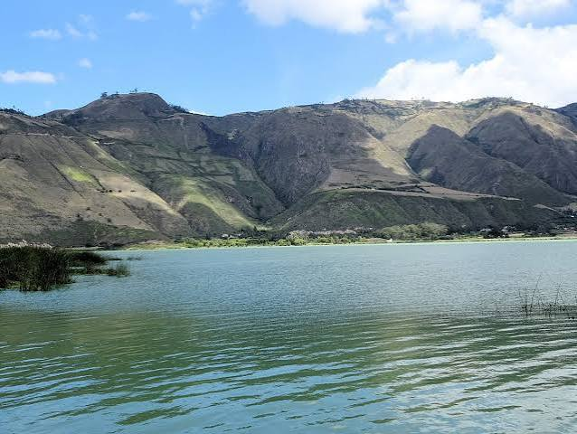
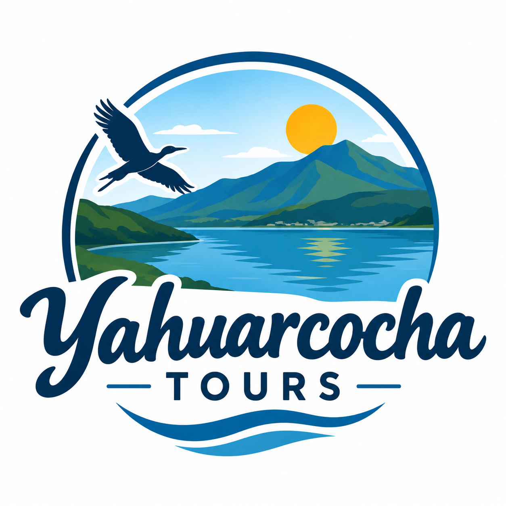
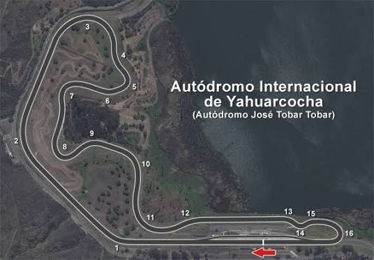
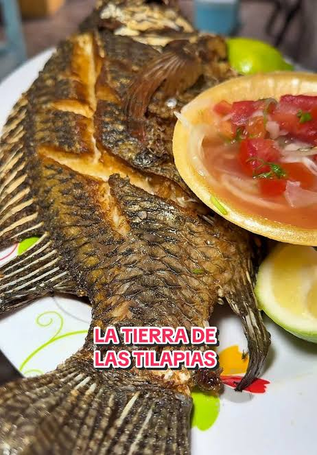
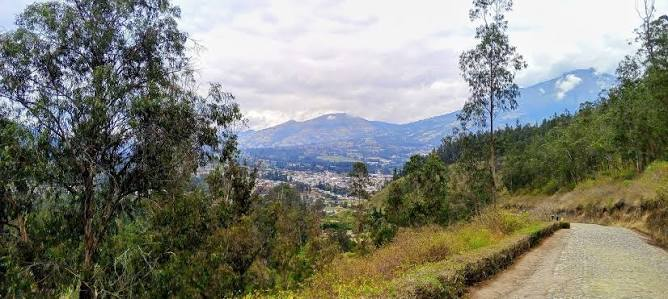
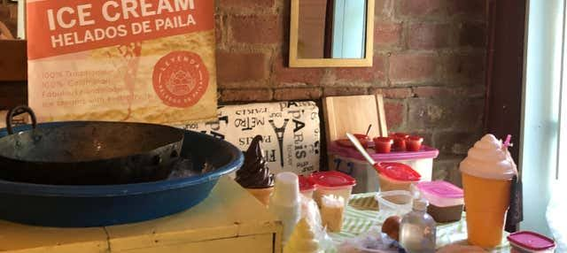
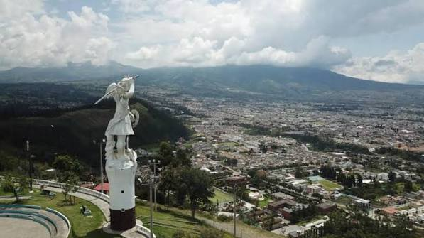

Laguna de Yahuarcocha
Espejo de agua natural con relevancia histórica incaica y un entorno rodeado de tranquilidad y naturaleza.
Ver más detalles →
Aventura, cultura y gastronomía en el corazón de Imbabura
Explorar DestinosIbarra, capital de Imbabura, alberga la impresionante Laguna de Yahuarcocha ("Lago de Sangre"). Un destino único que combina paisajes andinos, mística histórica ancestral, competencias de automovilismo de nivel internacional y una tradición culinaria insuperable.

Espejo de agua natural con relevancia histórica incaica y un entorno rodeado de tranquilidad y naturaleza.
Ver más detalles →
Pista internacional de carreras que bordea el perímetro natural de la laguna de Yahuarcocha.
Ver más detalles →
Corredor de restaurantes autóctonos famosos por preparar la tilapia frita servida fresca con patacones.
Ver más detalles →
Bosque protector urbano y mirador silvestre idóneo para conectar con la flora y fauna nativa.
Ver más detalles →
Demostración viva y degustación de la preparación artesanal de los tradicionales helados en paila de bronce.
Ver más detalles →
Escultura imponente sobre el cerro que otorga la vista panorámica más completa de la laguna e Ibarra.
Ver más detalles →